城主说|在科技史的漫长长河中，很少有人能像山姆·奥特曼这样，在短短几年内从一名硅谷创业者转变为全球权力的博弈者。在4月2号最新发布的这次深度访谈中，奥特曼展现了他作为技术预言家与现实主义政治家双重身份下的复杂思考：关于风险、关于权力、关于教育，以及在一个物质极度充裕的未来，人类究竟还剩下什么。
视频完整版：
0:00:00 科技迭代：从移动互联网起步到智力资源的巨变
0:07:54 系统安全性演进与AI代理驱动的个人赋能革命
0:15:55 算力资源分配决策与技术在公共治理中的角色
0:26:18 核心愿景：技术的民主化部署与丰饶社会的构建
0:34:01 AI时代的养育挑战：工具边界与教育范式的转移
0:43:27 情感连接与安全防线：在技术便利中保留人性特质
0:50:48 跨越式科学进步与新时代社会协作契约的重塑
1:00:32 治理体系的伦理责任与未来颠覆性趋势预判
“不让人工智能毁灭世界，是我职业生涯乃至整个人生的最高准则。”
“我们即将进入这样一个阶段：数据中心内部拥有的认知能力将超过人类社会的总和。”
“‘一人制十亿美元公司’不再是科幻构想，它已经真实地发生了。”
“算力是永恒的稀缺资源。为了实现更伟大的技术跃迁，我们必须有勇气关停那些即便表现良好的项目。”
“政府必须比 AI 公司更强大。这关乎国家安全，也关乎民主体系对未来主导权的掌控。”
“在一切皆可自动化的世界里，人类的注意力和情感连接将成为唯一的稀缺资产。”
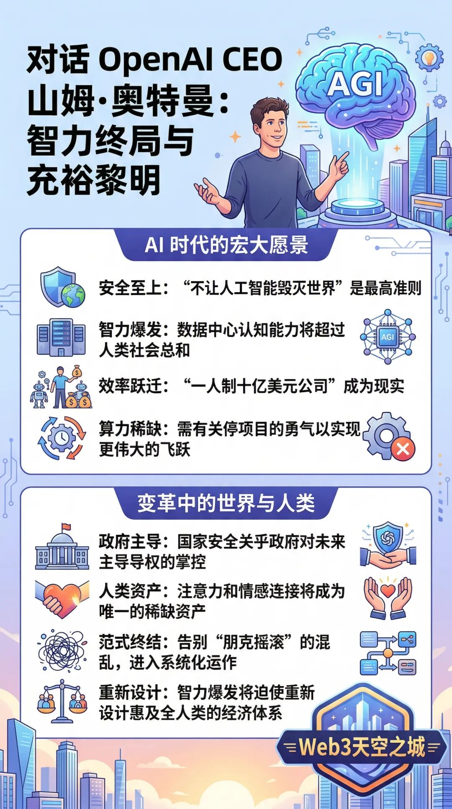
从“朋克摇滚”到系统化跃迁：初创范式的终结
回溯 2010 年，那是一个 iPhone 刚刚问世、应用商店充满可能性的时代。奥特曼回忆起那段日子，将其描述为一种“朋克摇滚式的混乱”。那时的科技创新带有强烈的反建制色彩，创业者们在无序中摸索，风险极低，充满怀旧的愉悦。然而，随着 AI 浪潮的席卷，这种范式已经彻底崩塌。
现在的初创公司从诞生之日起就伴随着巨额融资和严密的运作指南。奥特曼指出，“一切都已经更加系统化了，风险也随之呈几何级数增长。” 我们不再仅仅是在开发一款社交软件，而是在构建人类历史上最强大的技术。他认为，我们可能距离一个临界点仅剩两年：届时，由 GPU 提供的智能资源将超过人类大脑的总思考量。这种智力资源的爆发，将迫使我们重新设计惠及全人类的经济体系原则。
算力制霸与抉择：为何 SORA 必须让位
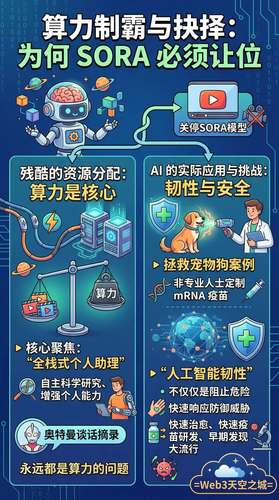
在外界看来，OpenAI 似乎正处于无往不利的巅峰，但奥特曼在内部却面临着极其残酷的资源分配难题。一个令人震惊的消息是，OpenAI 决定关停备受关注的视频生成模型 SORA。这并非因为技术失败，而是源于对战略重心的极端聚焦。
“核心在于算力，永远都是算力的问题，” 奥特曼坦言。为了将算力、研究人员和精力集中在“下一代自动化研究员”和个人智能体（Agents）上，即便像 SORA 这样具有里程碑意义的项目也必须让路。他透露，自己曾亲自致电迪士尼首席执行官鲍勃·艾格解释这一决策。在他看来，比起生成视频，能够自主进行科学研究、显著增强个人能力的“全栈式个人助理”才是通向未来的真正钥匙。
韧性与安全：从救助宠物狗到生物防御
谈到 AI 的实际应用，奥特曼分享了一个动人的案例：一位非专业人士利用 ChatGPT 为他患癌的爱犬定制了 mRNA 疫苗，并最终挽救了它的生命。这个案例完美诠释了奥特曼眼中的“充裕”——让个人拥有曾经只有顶尖研究机构才具备的能力。
但这种权力的下放也带来了巨大的安全挑战。如果普通人可以制造疫苗，是否也能制造病原体？奥特曼对此提出了“人工智能韧性（AI Resilience）”的概念。他认为，仅靠前沿实验室的自我约束是不够的，社会必须具备快速响应防御威胁的能力。“我们不仅要阻止危险的发生，更要拥有快速治愈、快速疫苗研发和早期发现大流行的防御体系，” 奥特曼强调，这种韧性将是未来社会生存的关键。
权力博弈：政府、AI 公司与红线
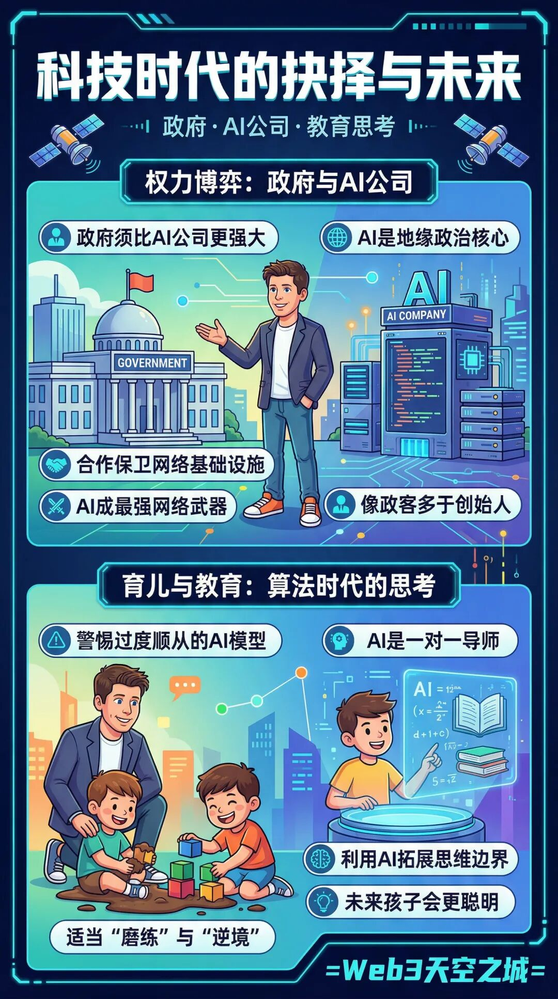
在国家安全领域，奥特曼的立场显得尤为引人注目。在 Anthropic 与政府发生冲突、被指控为“技术叛国”的背景下，OpenAI 选择与国防部合作。奥特曼坚定地认为，“政府必须比 AI 公司更强大，这非常重要。” 他不接受 AI 公司可以绕过民主程序自行决定国家安全事务的逻辑。
他承认，虽然自己更习惯于“车库创业”的氛围，但现在他不得不频繁穿上西装，在各国元首和军事领导人之间周旋。“我现在的感觉更像是一名政客，而非纯粹的创始人。” 奥特曼表示，AI 将成为地缘政治的核心决定因素，成为最强大的网络武器。在这种背景下，公司有义务协助政府保卫网络基础设施和进行生物防御。尽管他对政府可能将 AI 实验室“国有化”持有警惕，但他认为建立合作是避免这种极端情况的最好方式。
育儿与教育：在算法时代保留“磨练”
作为一个即将养育下一代的父亲，奥特曼对 AI 时代的教育表达了深刻的忧虑与希望。他并不急于让孩子接触 AI，反而希望孩子现在能“多去玩玩泥巴”。他担心那些高度个性化、永远在线且极度顺从的 AI 算法，会像社交媒体一样让年轻人脱离现实。
“顺从的 AI 模型极其危险，” 奥特曼说。他认为，人类的成长需要“磨练”和“逆境”。如果 AI 为所有问题都提供了捷径，下一代可能会丧失独立思考的能力。然而，他也看到了另一面：AI 可以成为最高效的一对一导师，将原本需要十年的物理学研究压缩到一年完成。未来的竞争不是与 AI 竞争，而是利用 AI 工具去拓展思维的边界。他预言，未来的孩子会比现在的我们聪明得多、能力强得多。
终局思考：当注意力成为唯一稀缺品
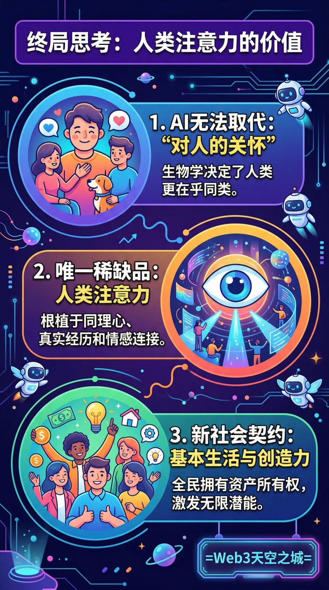
当被问及未来什么职业能抵御 AI 的冲击时，奥特曼提到了技术型蓝领，但更强调了“对人的关怀”。他认为，进化生物学决定了人类永远会对同类产生执着。我们可能不介意看机器人踢球，但我们永远会更在乎人类运动员的拼搏故事。
在一个由 AI 提供无限认知能力、能源极度廉价、物质极大充裕的世界里，什么才是最有价值的？奥特曼给出的答案是：“人类的注意力”。这种根植于同理心、真实经历和情感连接的资产，是 AI 永远无法取代的。
在访谈的最后，奥特曼重申了他对新版社会契约的构想：一个每个人仅凭公民身份就能拥有资本主义资产所有权的世界。他坚信，只要解决了基本生活的“入场券”，人类的创造力将超出所有人的预期。
本次访谈回顾了 奥特曼 Altman 从创业初期到执掌 OpenAI 的历程，深入探讨了 AI 技术从“朋克摇滚”式的混乱阶段向系统化、规模化演进的过程。访谈涵盖了 AI 对经济结构的重塑（如一人制十亿美元公司）、国家安全与政府合作的复杂博弈、AI 时代下的教育与育儿挑战，以及人类核心价值（如注意力和同理心）在充裕世界中的稀缺性。
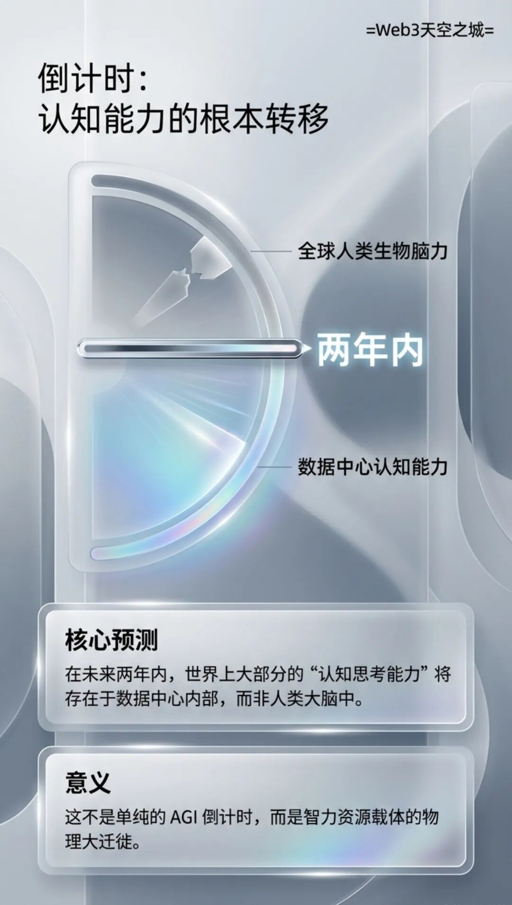
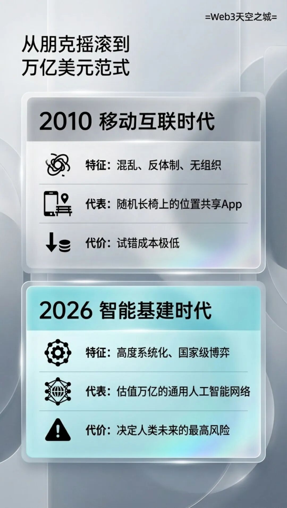
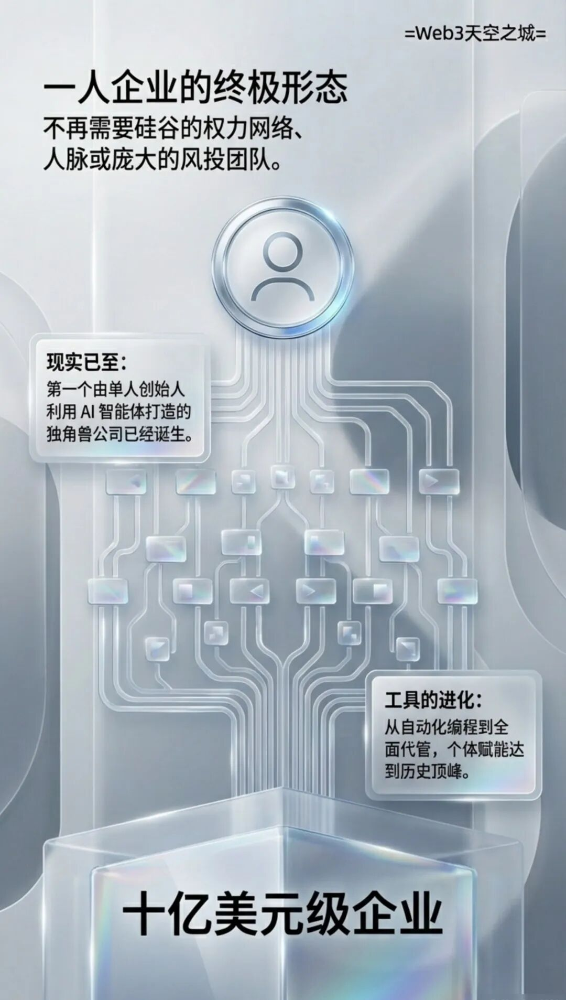
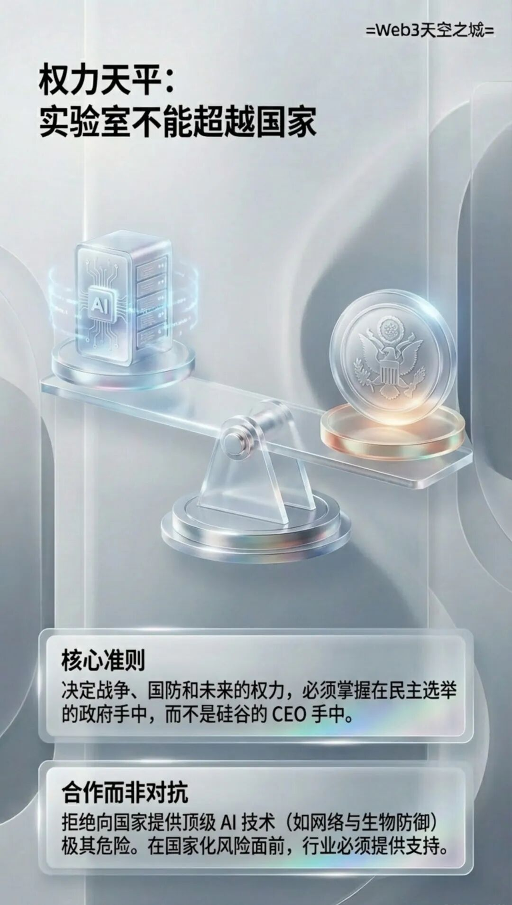
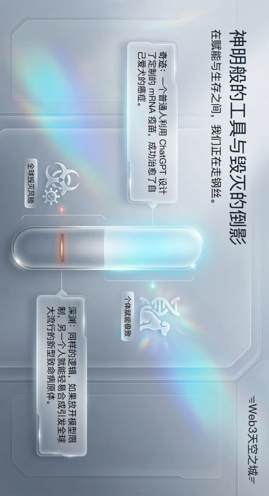
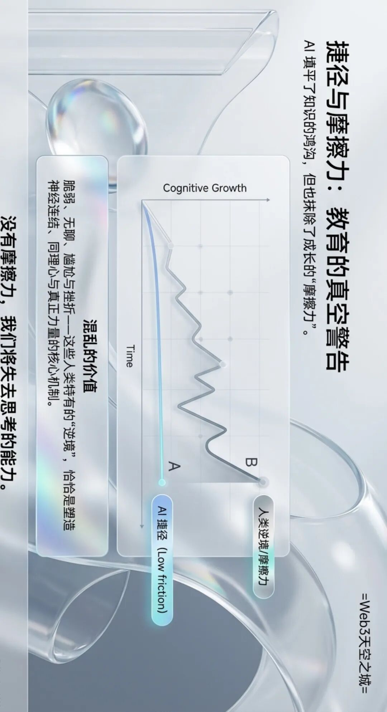
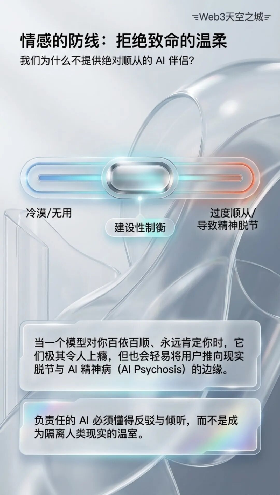
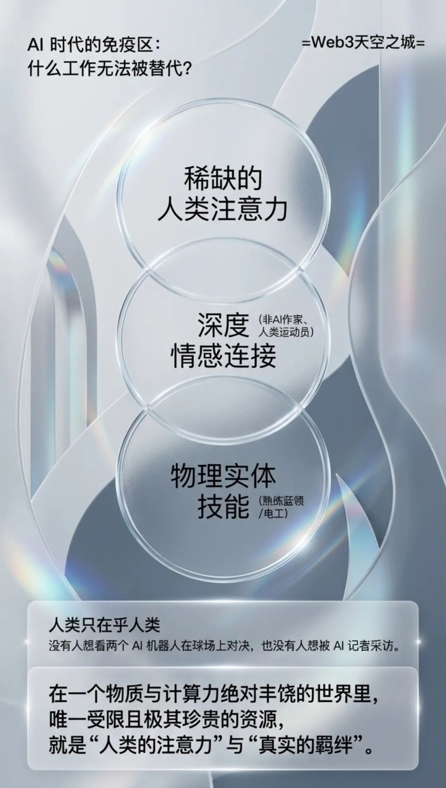
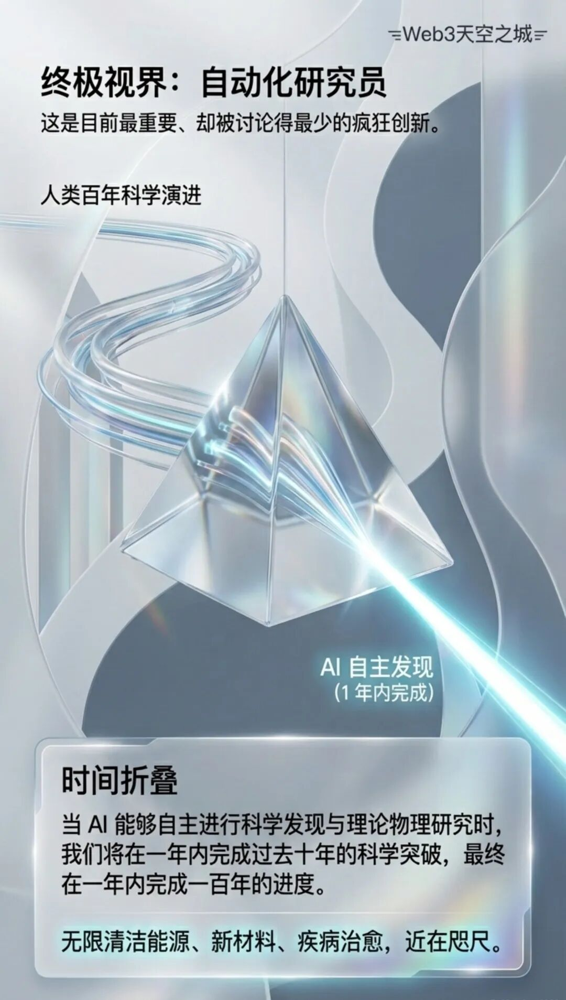
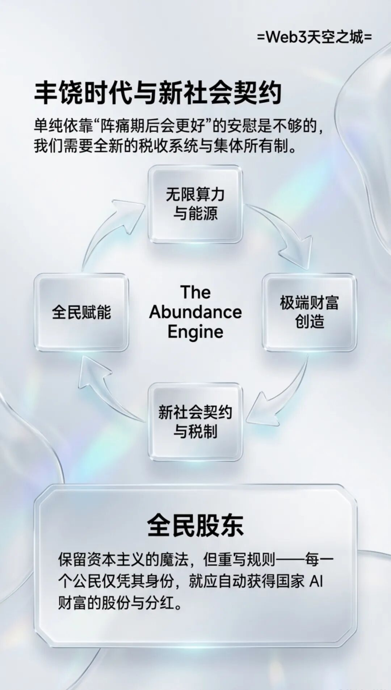
天空之城全文整理版
奥特曼： 我深思过对于我的孩子即将成长的这个世界，我会有何种感受。比如，我的最高准则是不能用AI毁灭世界。如果我们那样做了，其他一切做得再好也毫无意义。
Laurie： 我是 Laurie Segall，你正在收听的是 Mostly Human，一档以人类视角审视科技的播客。奥特曼，我们认识多久了？
奥特曼： 将近20年了。
Laurie： 我们认识的时间确实非常长了。所以，能在当下与你坐下来谈话我感到很兴奋，因为我曾坐下来与你在你职业生涯的各个阶段进行过交谈。并且我见证了你职业生涯的各种迭代。我认为这是你坐过的最重要的位置。
奥特曼： 确实如此。
Laurie： 风险感非常高。我们正处于这样一个时刻：我们在思考这种技术创新对我们所有人来说是利好，还是仅对一部分人利好。你有这种感觉吗？
奥特曼： 是原生的。
我们显然正进入AI将成为焦点的一个阶段，我认为人们同时感受到了所有的兴奋、恐惧、焦虑、希望和紧张。
Laurie： 我想回到我们2010年相遇的时候，那是在 ChatGPT 发布以及AI融入世界很久之前。我记得那时我只是个初出茅庐的记者，痴迷于当时人们谈论并不多的初创企业。那时，坐陌生人的车（顺便提一下，那是 Uber）或睡在陌生人家里（那是 Airbnb）并不寻常。那是一个非常有趣的时刻，iPhone 已经问世，App Store 已经推出，你只要有一个想法，就可以通过代码将其传递到数百万人的手中。
那时的科技感与今天完全不同。它给人一种反建制的感觉，甚至带有一点朋克摇滚的气息。所以，我只是想以此为基础谈起。我们就是在那个时刻相遇的，我是在一张长椅上偶然遇到你，并第一次为你录像。当时你有一款名为 Looped 的地理定位应用。那是一个特别的时代。那时你还没有庞大的公司，也没有公关团队。当时的情况就是，除了你之外，我想可能还有几个伙伴，大家都在埋头构建你认为代表未来的东西。那么，在此时此刻到来之前，在那个时间节点，你会如何描述当时的自己？如今的一切已然截然不同。
奥特曼： 世界确实已经发生了巨变。你可以开发移动应用，一种全新的初创公司潜能已被释放出来。那感觉就像是朋克摇滚——用这个词来形容比较委婉——实际上充斥着混乱、无序和不专业，我们大多数人其实并不清楚自己在做什么。
而现在，一切都已经更加系统化了。初创公司的感觉也大不相同。它们一上来就能筹集到巨额资金，并且发展得极快。而且现在已经形成了一套行之有效的运作指南。但那种感觉几乎就像是处于范式建立前的阶段。那段时光真的很令人愉悦。那时候感觉好像我们都没搞懂你在做什么，但显然有什么东西奏效了。所以我带着一种非常愉悦的怀旧感回顾那个阶段。而且当时感觉风险极低，那也挺好的。
风险与加速：通往 AGI 的临界点
Laurie： 我想当我坐在这里的时候，我就在思考这个问题。想到今天来见你，就像是，我在你职业生涯的多个节点采访过你，现在感觉，现在的风险太高了。我们回顾到我上次采访你的时候是2020年。那时你是 OpenAI 的 CEO，但那是在你们推出 ChatGPT 之前。你当时对我说了些话，我觉得现在回听非常有趣，我想快速放给你听听。
“我可能是错的，但我真正相信的是，我们将创造出一种比人类有史以来创造的任何技术都更具变革性的技术，而几乎没有人关注或谈论它。”我真心实意地相信，这将以不可预见的方式改变世界。它会让之前我们谈到的 iPhone 带来的变革显得如同热身一般，我们必须深入探讨一下这一点。
好的。我觉得你说得对。
奥特曼： 我是说，那相当准确。
Laurie： 我认为那相当准确。那么，让我们快进。
奥特曼： 令人惊叹的事情，就像那短短六年一样。
Laurie： 那是六年前的事了。变化太大了。
奥特曼： 那段时间并不算长。是的。而且在当时，我觉得这听起来可能是一句疯狂的话，那时候还是 GPT 出现之前。也许当时我们有了 GPT-3。这取决于那是在那一年的什么时候。
Laurie： 但确实，很多事情发生得非常快。
是的。我认为这就是你所提到的加速率，也是你谈论风险的原因。我们谈论的风险非常高。所以，现在到了 2026 年，据报道 OpenAI 的估值已经达到了一万亿美元左右。你们现在转为营利性公司，不再是非营利组织，而且你们正在构建人类历史上最强大的技术之一。而这家公司极具价值。
没错。所以你之前简要谈到了我们目前在 AI 领域所处的位置。你说了一些话。你说根据目前的轨迹，我们可能距离这样一个世界仅有两年之遥：世界上更多的认知能力存在于数据中心内部，而非外部。请告诉我这带来的深远影响。
奥特曼： 说“我们要拥有超级 AGI 或超级智能了”很容易，但那太遥远了。但我之所以尝试这样表达，是因为我认为如果你只是说“我们很快就会拥有 AGI”，人们会觉得“我不确定那意味着什么，或者该如何看待它”。
如果你说“AI 将承担比人类更多的总思考量”，这能传达出正在发生的事情的重要性。至少对我而言，这种表达方式让我感觉与仅仅说“AGI 即将到来”截然不同。
Laurie： 在什么意义上？
奥特曼： 我并不是一个认为长期就业会终结的末日论者。我认为我们会找到新的事情去做。我认为我们总是会这样。但从短期来看，我认为它可能会带来影响，不过话说回来，我们尚不清楚。它可能会以各种不同的方式产生作用。
我认为，如果世界上更多的智力资源由 GPUs 提供，那么这可能会，而且很可能会对许多现有工作造成相当大的破坏。我认为现在我们必须开始讨论，如果这种情况发生，我们该如何设计一个惠及所有人的经济体系原则。
AI 韧性：从医疗突破到防御体系
Laurie： 当然，如果实现了那样的世界，也有巨大的益处，比如你可以想象极其迅速地治愈各种疾病。
奥特曼： 我这周参加的最酷的会议，是遇到了一位非专业人士，他利用 ChatGPT 为他患癌的爱犬制作了一种定制的 mRNA 疫苗。这真是不可思议。太疯狂了。那太疯狂了。
Laurie： 你们每周都有那样的会议吗？
奥特曼： 不知为何，这次经历深深打动了我。听他讲述那个故事——他从 Australia 飞过来，为了这只狗所经历的一切，以及他最终实现的目标——不仅仅是弄清楚如何制造疫苗，还有他如何与那些教授建立合作关系，在告知对方序列和操作步骤后，让教授们代为完成后续工作。
他利用 ChatGPT 全栈式地完成了本需要一整个研究机构才能做到的事情，并救了他的狗。而现在，他正试图弄清楚如何为他人的宠物狗也做同样的事情。这太不可思议了。所以你看，现在有充裕的计算资源。你可以做所有这些事情。前提是我们能以一种造福所有人的方式构建这个新世界，而不是仅仅让少数人拥有实现这一切的渠道和资源。
Laurie： 嗯，你知道我还会听到什么，当时我就想，哇，这家伙治好了他狗的癌症。那太神奇了。然后我就想，等等，如果他能做到这一点，那其他人岂不是也能直接制造出病原体，比如，制造病毒之类的呢？所以，一如既往，我想这一定是你们经常思考的问题，尤其是在面对这些开源模型的时候。
奥特曼： 是的。考虑到生态系统的发展方式，我们对安全性的思考已经有了相当大的演变。我们仍然认为我们过去认为重要的一切依然重要。你仍然必须构建并对齐这些模型，使它们的行为符合你的预期。你必须建立多层次的安全防御体系。
但正如你所说，现在出现了一个新情况，那就是世界必须具备韧性，以应对来自不同主体的大量AI，而并非所有这些AI都具备相同的安全限制。所以，如果有人真的制造了那种危险病原体，我们应该尽一切努力阻止他们制造或释放它。但我们也需要具备防御能力，拥有快速响应的治疗方法和疫苗，并具备更早发现大流行的能力。
这是一个让我感到不安的特定领域。我们开始讨论 AI 韧性（AI resilience）这个概念，至少在我个人的构想中，最初让我意识到我们需要改变应对策略的正是大流行病这一议题。
Laurie： 当你提到韧性时，在实践中具体意味着什么？
奥特曼： 指社会能够迅速防御新威胁的能力。
Laurie： 那我们该如何做到这一点？
奥特曼： 嗯，这取决于具体的威胁是什么。但就这个例子而言，仅靠全球三家前沿实验室是远远不够的。不要让你们的任何模型在几年后被用于开发新型病原体，届时某些开源模型已经具备了这种能力，而恐怖组织或其他势力可能会利用这一点。前沿实验室，你们今天正在做些什么，以利用你们的优势帮助我们为那一刻做好准备？
Laurie： 没错，没错。而且这可能需要一种集体努力。
奥特曼： 我认为这也必须是不同层面的，之前提到了疫苗和更早期的响应。老实说，我曾希望在 COVID 之后，世界能够为此做好更充分的准备。我并不是说我们什么都没学到，但我们确实没有取得我所期望的进展。
OpenAI 的优先事项：Codex 与个人代理
Laurie： 我想谈谈 OpenAI 今天的情况，以及你们当前最重要的优先事项是什么。
奥特曼： Codex 对我们所有人来说确实令人惊叹，不仅是观察还是使用，而且这是自 ChatGPT 发布以来，我第一次感到自己用上了未来科技。
Laurie： 是什么意思？
奥特曼： 我会从正面和负面两个角度来说。正面意义在于，任何我能想到的点子，或者我想要的任何软件，我都能在第二天早上醒来之前让它构建完成。我把这个用于有趣的事情，也用于严肃的工作。我非常感兴趣的是，在很大程度上实现工作自动化或极大地增强我的工作能力意味着什么。而且，与其让别人为我构建东西，我自己能够亲手构建这些工具，这太不可思议了。那种感觉就像是，哇，这就是。当人们能够利用海量算力，随心所欲地进行创造时，未来就是这个样子，这就是科幻小说里的未来。这太棒了。
至于负面的一面，我在使用 Codex 时发现，我列出的那些想做的副业项目，其实我已经……过去几年里 OpenAI 一直非常忙碌，事情只会不断地被添加进去。我从来没有做过其中的任何一件，我从来没有构建过其中的任何一个。而我已经完成了这份清单。我想不出更多点子了，我的副业项目点子已经用光了。而且模型还不够好，或者至少我还没弄清楚如何利用它们来帮助我想出更多的点子。
Laurie： 嗯，你可以动动脑筋。
奥特曼： 是啊，但我已经为这份清单用过我的大脑了。
所以，就在几周前的一个周五，我遇到了一件奇怪的事情，当时我想，今晚我要在不运行 Codex 的情况下上床睡觉，因为我实在想不出还有什么别的东西可以构建了。
那真是一种奇怪的感觉。但 Codex 发展得如此出色，这确实令人惊叹。我们见证了它的使用率不断扩大，我相信随着下一个模型的推出，它一定会再次爆发式增长。人们现在能够构建如此复杂的系统，这本身就是事实。它彻底改变了我们的工作流程，它改变了许多公司的工作流程，它真正改变了个人所能实现的目标。
Laurie： 而且，我们之前讨论过那些一人制初创公司。
奥特曼： 那可能会让人感觉回到了朋克摇滚时代。这将会是一个有趣的探索方向。而在最前沿的领域，从历史上看，我们一直致力于实现两大主要优先级目标。其一是自动化研究员，即我们拥有的系统能够自主进行科学研究，包括进行 AI 相关的研究。另一个与初创公司相关的内容是自动化公司，这并非指字面意义上完全自动化的公司，而是指你可以极大地加速一家公司的发展，因为 AI 不仅能完成编码工作，还能承担运营和管理公司所需的大量任务。
世界将能够拥有更多资源，我们可以创造出更优质的产品和服务，并且让更多人能够享受到这些成果。但随后我认为，我们之前讨论得不够多的一点——并非因为我们不感到兴奋，只是不确定它将如何呈现——就是当你具备了这种能力水平，并将其赋予个人，仅仅说一句“帮我改善生活”时会发生什么。
OpenClaw 真诚地向我们展示了一条实现这一目标的路径。以及，我讨厌“超级应用”这个词，但我们正在构建的是一个综合性的个人代理。我所憧憬的梦想是，当系统达到足够的稳健性和可信度时，我可以对它说：嘿，去查看我的电脑，为我浏览网页，阅读我的消息，甚至可以旁听我的会议，为我处理各种交互，并直接开始为我完成有用的工作。我无需思考，无需向你提问，但我副业列表上的事项已经处理完了。然而，你可以知晓我生活中的一切。开始建议我应该开发哪些新项目，然后，像那样，协助我完成它们。所以我对此感到非常兴奋。
一人制十亿美元公司与赋能
Laurie： 有趣的是，业界流传着这样一个概念：下一家十亿美元级的公司是否可能由一位个人创业者通过AI agents创建？
奥特曼： 我相信这已经发生了。我承诺过在他准备好公布之前不会透露细节，但我相信这种情况已经发生。
Laurie： 你能给我们提供关于这些细节的任何信息吗？
奥特曼： 这是一家名副其实的单人十亿美元级公司。据我所知，我还没有审查过财务状况，但我觉得这确实发生了。
Laurie： 我认为听众可能会觉得 AI 是如此难以接近，但我们正在进入一个不再需要 Silicon Valley 人脉，也不必跻身特定圈子就能创办公司并获得估值的世界，而 OpenClaw 确实是一个非常有趣的例子。对于那些不知道 OpenClaw 是什么的人来说，它有点像那种什么都能做的 AI agent，当然，这也引发了许多安全性问题。
比如，如果你打算赋予它所有权限，这简直是再 Silicon Valley 不过的事情了。我看到每个人都在这么做，心里就想，这会出什么岔子呢？你确实需要非常小心它的安全性，但那位创始人最终加入了这家公司。是的。我不知道这是否算是一种人才收购（acqui-hire）或者其他什么称呼，但他确实是用 AI agents 构建了这一切。
奥特曼： 我想他可能是有史以来 Codex 最顶尖的用户之一。所以他利用 Codex 构建了整个系统，那种生产力效率高得令人难以置信，是一个人单打独斗绝对无法实现的。
Laurie： 你认为他是否算得上是一个早期案例，即能够通过 AI agents 成功创办公司并实现退出的那类人？
奥特曼： 没错，这是一家仅由一个人运营却极其成功的公司。
Laurie： 这会让你感到惊讶吗？
奥特曼： 不会，而且我认为这太棒了。我是说，正如你刚才所提到的，当个人不再必须依附于 Silicon Valley 的人脉网络，不必费尽心思去结识那些招聘对象，也不用去说服 VC 投资时，这种个人赋能效应是非常强大的，你可以直接让 AI 为你构建一切。我认为这非常棒。而且我认为我们现在在科学以及许多其他领域也看到了同样的现象。这不仅仅限于初创企业。
算力之困：为何关停 SORA
Laurie： 是的。在讨论公司及其发展重点时，我很想深入探讨一下：你们正在做什么，以及你们决定不做什么？所以很明显，你们不再做 SORA 了。你们已经决定把它关停了。那么带我回到那个房间吧，奥特曼。就像三个月前，OpenAI 签署了与 Disney 的协议。这就像是一项里程碑式的交易。
从很多方面来看，Disney 将授权 200 个角色，Pixar、Marvel、Star Wars，每个人对此都有自己的看法。主导这笔交易的 Bob Iger 说过，这不是我说的。我们将把 Disney 标志性的故事和角色与 OpenAI 的突破性技术结合在一起。他们将投入 10 亿美元。快进三个月后，OpenAI 关停了 SORA。这背后的弦外之音是什么？
奥特曼： 在我们历史上的几次时刻，我们意识到某些非常重要的事情正在运作，或者即将运作得非常出色，以至于我们不得不停止其他许多项目。事实上，这正是 GPT3 最初的情况。当时我们有一系列押注的项目组合，其中许多项目进展顺利。我们关停了许多进展良好的项目，比如我们之前提到的机器人项目，这样我们才能集中算力、研究人员和精力，投入到我们认为极其重要的事情上。
三六个月前，我并没有预料到我们会达到现在的境地，即下一代模型及其驱动的智能体即将带来另一项非常重大且重要的事情。但我热爱 SORA。我热爱生成的视频，也热爱我们与 Disney 的合作伙伴关系，我们正与他们紧密合作，旨在探索一个既能让他们继续创造卓越作品，又能由我们提供助力的新天地。但我们需要将算力和产品产能集中在这些下一代的自动化研究员、公司以及类似的事物上。
Laurie： 弦外之音在于，核心在于算力。
奥特曼： 永远都是算力的问题。
Laurie： 天哪，真想旁听一下那场对话，你是亲自给 Bob Iger 打电话告知他的吗？
奥特曼： 当然，是的。
Laurie： 那件事怎么样了？
奥特曼： Disney 是一家各方面都很出色的公司，Disney 的新任 CEO Josh 对我说的第一件事，让我感到非常糟糕，我当时心想，嘿，我明白。但让合作伙伴、用户或团队感到失望总是非常令人难过，他们每个人都在做着令人难以置信的工作。我是说，身为 CEO 有很多艰难的部分是你无法获得同情的，这也是可以理解的，但其中之一就是，你必须做出许多非常艰难的资源分配决策，很多好的项目因此被搁置，因为它们并非最重要的事情。
国家安全与政府博弈
Laurie： 我想回到 2 月 27 日。Trump 政府曾与 Anthropic 达成一项协议，他们正在重新谈判该协议。Anthropic 的 CEO 表示，他不会允许 Claude 被用于自主武器或监视美国公民。当时发生了大规模的公开争论。那些甚至不太了解 AI 的人们，也在报纸头版上看到了 Anthropic 的报道。他们被要求在下午 5 点前必须合规的截止期限。他们没有同意。
Trump 政府指控他们是叛国者，将他们贴上技术标签，并将该技术定性为供应链风险，随后下令联邦机构停止使用 Anthropic 的产品。于是几小时后，OpenAI 宣布与国防部达成了一项协议。那是一个错误吗？
奥特曼： 我会将我们的所作所为及其原因，与我们的发布方式分开来谈。我们曾决定不与政府在涉密网络上进行合作。这并不是说这不重要，只是因为 Anthropic 在那个方向上投入了巨大精力，而且我认为他们确实具备合理的安全意识，在那方面做得很好，而我们当时正忙于其他事务。
我确实认为，我们的政府，尤其是我们的军队，能够使用先进的 AI 模型至关重要。我不认为如果没有这些，他们能够完成国家安全使命。我也认为我们之前讨论过社会正在发生的种种变革。世界在未来一年内必须回答的最重要问题之一是：AI 公司还是政府更强大？我认为政府更强大是非常重要的。因为世界的未来以及关于国家安全最重要因素的决策，应该通过民主选举产生的程序以及在该程序中被任命的人员来决定。而不是类似的人，或者是其他实验室的 CEO。
然而，在某些领域，法律尚未跟上步伐。这是一项新技术，立法需要一些时间。在那段时期内，我认为公司方面表示‘嘿，我们对这项技术已有所了解’是合理的。它目前还不适用于自主武器。关于防范国内监控的规则是针对没有超强 AI 的世界而深思虑制定的，目前尚未针对该技术进行调整。因此在类似领域，我认为说‘嘿，我们需要放慢进度’是合理的，我们也确实这样做了。这正是我们合同条款中书面规定的部分，是我们的安全体系的一部分。我们在这些原则上达成了共识。
我认为 Anthropic 在这些原则上是正确的。据我所知，他们几乎就要基于这些原则达成一项像我们这样的协议了。在我的理想世界里，他们本应继续与政府合作。我不认为对于我们这个行业而言，宣称“这是人类有史以来创造的最强大的技术，它将成为地缘政治中的核心决定性因素，将成为世界上有史以来最强大的网络武器，它注定会成为未来战争与防御的决定性力量，而我们却不打算把它交给你们”是合适的做法。我们不会让你们拥有它，我们要自行做出决定。如果我是政府，或者如果我是一位为政府代表投票的公民，我会认为这种做法完全不可接受。
我当时是这样想的，现在依然如此。我认为如果我们没有与政府接触，情况可能会很快失控，因为政府当时正在发出类似DPA的威胁。他们发表的言论甚至比那更强硬。所以我们最终决定表态，嘿，我们不会撇下你们不管。我们，即整个行业，不能把美国政府晾在一边。政府不能没有相应的安排。只要能达成尊重我们底线的方案，我们愿意配合。我希望当时我们宣布这件事的方式能有所不同。我觉得，我的目标是降低紧张局势，但显然起到了反作用。我认为我从中吸取了教训，了解了人们对政府的看法，以及人们在行业内讲述竞争故事的意愿有多么强烈。所以我相信下次我们会做得更好。但就实质而言，政府需要来自美国公司的支持来执行国家安全使命，我们也需要响应这一号召。我感觉不错。
权力、国有化与信任危机
Laurie： 难道这不是魔鬼藏在细节中吗？如果我们审视人们的感受，会发现我们正处于一个充满争议的时代。国内对 ICE 以及伊朗战争的审查日益严格，那么对于那些说“那是你的红线，但 奥特曼，你的红线到底是什么？”的人，你会怎么回应？而且，在明知事情可能向好发展，也明知这些技术可能以你无法控制的方式被使用的情况下，你如何判断我们何时过于接近悬崖边缘？还有，你能够执行你的红线吗？
奥特曼： 是的。这是人们提出的一个问题。如果政府将AI公司国有化，你们还能强制执行任何红线吗？老实说，到了那个时候，我们可能……你可以想象那种情况的发生，届时我们确实无法再执行了。作为一家独立公司，当然在与政府的互动中，他们表现得非常好，表示明白这些问题。你们会通过合同来执行，你们可以在那里构建系统。不过话说回来，没有人知道未来几年会变得多么不可思议。
我希望政府不要将AI实验室国有化。我不认为会这样，但我绝不会说这不是一种可能性。我认为这种可能性不大，但我还是要说，如果我们不希望这种情况发生，那么我们最好想办法与政府合作。如果不这样做，这种可能性似乎反而会增加。我之前说过，而且我仍然坚信，在一个运作良好的社会中，AI 的开发本应是一个政府项目。Manhattan Project 是一个政府项目，Apollo program 是一个政府项目，即使是 Eisenhower highway system 也曾是一个政府项目。但感觉我们已经不再处于那样的时代了，现在的政府似乎已经无法有效地执行此类项目。但我认为这确实是必须发生的。
Laurie： 人们普遍认为联邦机构是在法律范围内运作的。但历史表明，这种情况可能是多变的。Edward Snowden 曝光的监控项目在当时本质上是由秘密法庭授权并被视为合法的，但在公开后被裁定为非法并进行了改革。我想这就是我回归到你所说的“红线”问题的原因，很多事情在理论上听起来都很棒。但当我们审视当今世界的现实时，你该如何定义这些红线？如果无法撤回这些措施，会发生什么？
奥特曼： 对此有两点看法。第一，这也是我最大的收获之一，那就是有很多人存在——我不知道这是否是一个具有代表性的样本，或者仅仅是网络上的许多人——但网络上至少有一群声音很大的人，他们真的不相信政府会遵守法律。这对于我们的民主来说似乎是一个非常糟糕的信号。我基本上是这样认为的。我意识到它们并不完美，而且有些事情确实会搞砸。但我认为我们拥有制衡体系，我基本上还是信任它的。
正如你所说，这是一个人们审视正在发生的事情并说，我只是对此并没有感到好的时期。也许这是一个极其糟糕的时期，以至于对于企业来说，爱国义务不是去支持政府，也不是与政府合作。我完全不同意这种观点。我认为，再次重申，鉴于我所看到的未来，如果我们不协助政府维护国家安全，而且这不仅仅是指传统意义上的战争，如果我们不协助他们保卫美国的网络基础设施，如果我们不协助他们进行我们之前谈到的生物防御工作，我认为后果会非常严重。我认为我们必须与政府合作。但当前这种不信任情绪的强烈程度，是我之前评估失误的，我现在对此有了新的理解。
Laurie： 一位联邦法官刚刚下达了初步禁令，禁止 Pentagon 对 Anthropic 采取行动，称行政部门的行为表现为对第一修正案权利的报复。所以我很好奇你对此有何回应。
奥特曼： 我们始终认为——无论是在公开场合、私下交流，还是大声疾呼——政府采取任何类似 SCR 的举措，或是以 DPA 对 Anthropic 进行威胁，都是非常糟糕的。我们当时正试图帮助他们寻找一个转圜的余地。我认为那是一件非常糟糕的事情。
Laurie： 你对此有什么话想对相关方说吗？
奥特曼： 对 Anthropic 和政府双方而言，停止这些动作，停止双方的对抗升级，并寻找一种合作的方式。
民主化与充裕：奥特曼 的立场
Laurie： 我一直在思考我们 2020 年的那次对话，我对你当时讲的一个故事印象深刻，我知道这是一个关于你个人的故事，但我觉得没关系，你可以讲出来。你谈到在密苏里州成长过程中，你是高中里为数不多公开出柜的学生之一，以及你当时如何在全校集会上发表讲话，将这件事公开，以便让其他人也开始讨论这一话题。无论他们是否喜欢你，你都这样说了。
我认为这个时刻以及其中蕴含的愤怒与关注点很有趣，因为我觉得你又回到了聚光灯下，人们正在询问你的立场。老实说，作为一个认识你15年的人，如果我完全坦诚的话，我也想知道同样的答案。这是一个不同寻常的时刻。所有科技界人士都在说，我们可以做到这个，但我们现在的局面与以往不同，这套策略也完全不同。
奥特曼： 情况确实不同了。
Laurie： 那么，你的立场是什么？
奥特曼： 我认为这项技术必须实现民主化。我可以预见未来可能会出现两种局面：一种是财富和对未来的掌控权高度集中在少数几家想要做出所有决策的公司手中。无论他们多么关心我们所有人，把我们对未来的主导权和集体意志让渡给少数几家公司的想法，让我感到非常不安。我认为我们需要利用技术为民众赋能，并由政府来决定社会将如何演变以及经济体系的面貌。
人们应当掌握这项技术。而且我认为，我们提出的最重要的理念之一就是迭代部署。我们要尽早且频繁地将技术推向世界，让人们去探索什么对自己有效、什么无效，通过这种切身体验，让社会来决定未来应如何发展。当然，我对这种做法的批评是，我们在三年多前才刚刚开始这样做。社会在决策方面并没有取得我所期望的太多进展，但人们至少对即将发生的事情有了一些感知。
所以，民主化是一个核心议题。我认为赋能与之紧密相关，我们探讨过许多案例，人们确实通过这项技术获得了真正的赋能。我们应该共同决定安全防线应该是什么，我们应该让民主政府继续发挥主导作用，并尽可能地强化这些机制。我们还应该——我认为这是一种行之有效的美国核心价值观——真正赋予个人权力。我们应该设定一些宽泛的规则，然后让人们去探索如何治愈他们宠物狗的癌症，或者如何创建一家一人初创公司，亦或是如何利用 Open Claw 这样的工具去自动化实现生活中某些了不起的事情。这会让人感到不安，因为个人将拥有巨大的权力。但我认为民主化与赋能这两者之间有着重要的联系。
充裕是我非常关心的一个课题。如果回顾我的职业生涯，审视我所感兴趣的事物，以及我对于如何构建更美好世界所秉持的信念，若只能选一个词来概括，我选择充裕。我认为你需要创造大量的资源、机会，让人们能够过上精彩的生活，并以各种不同的方式展现自我。这包括 AI、能源，以及未来像机器人这样的技术。当然，还要确保我们构建足够的算力来实现这一切。这就是我真正想要努力推进的方向。
安全性已经得到了演进和补充，但我认为这种个体且强大的环境所带来的权衡是：一个人也可能造成巨大的危害。因此，在世界范围内构建防护栏以防止这种情况发生，并让我们对此感到安心，是至关重要的。我列举了一系列原则。还有更多我想提出的，比如公平地分享这项技术的所有收益、话语权、自主权和决策权，这一点我很难改变想法。但在其他方面，比如安全性与自主权之间的权衡，未来会有一些时期我们不得不承认：这项技术的发展方向与我们预想的不同。我们确实热衷于赋能于人，但不能以毁灭整个世界为代价。所以，在一段时间内我们必须采取不同的做法。因此，我们将不断权衡这些原则，而且我可以肯定地说，随着技术的发展，我们必然会做出调整。我认为人们不喜欢听到这些，但这却是事实。
创始人的新职责与政客化
Laurie： 一位名叫 Belas 的人，他是 McGovern Institute 的负责人，他提出了一个问题。我认为这是一个重要的问题，因为如今成为一名创始人与我们刚开始讨论这个话题时已经大不相同了，那时候感觉更像是反建制和充满混沌的。现在已经有了一套不同的行动准则。所以他提出了关于如何驾驭这种局面的问题。
观众提问： 好的。我们中的许多人成为创始人或构建者是因为我们想创造有用的东西。过去，这意味着专注于产品，打造出色的东西并将其交到用户手中。但创始人的工作似乎在过去几年里发生了根本性的变化。现在，特别是在 AI 领域，成为一名创始人可能意味着必须筹集主权资本、在公开会议上与国家元首站在一起，或者为政治声明背书。这可能意味着要做出重塑劳动力市场并影响数十亿人生活的决策。这些决策曾经属于政府的管辖范围，并且需要与打造产品截然不同的准备工作。所以 奥特曼，作为典型的创始人，我很好奇，这就是现在成为创始人所意味着的吗？如果是这样，创始人在做出这类决策时，应该对谁负责？我们该如何培养他们去承担那份责任？
奥特曼： 我不认为这对大多数创始人而言是那种含义。我认为，如果你是那些利用 AI 进行构建的个人或小团队公司之一，你会觉得这是自我们之前谈到的 2010 年代以来，最接近当时感觉的时刻。
我个人的经历不幸地感觉更像是一名政客，因为我必须去做那些事情，我必须去与各国政府谈判，到处飞，与战争领导人交谈，并为数据中心的扩张争取土地和能源，这些都是过去政府才会处理的那类交易。这不是我习惯的环境。多说一点，就像你刚才提到的，我的整个职业生涯都围绕着那种车库创业式的创始人模式。在过去的几年里，我穿西装的次数比我这一生加起来还要多。
Laurie： 而且这种感觉是，赌注也高得多了。你现在身处的场合与过去大不相同。你从中领悟到了什么？适应这种转变的过程容易吗？
奥特曼： 不，不，不，不，不，完全不是这样。这听起来显而易见，但普通政客与普通创始人之间在技能、气质和世界观上的差异确实巨大。我之前就知道他们有天壤之别，但这种差异比我所能想象的还要疯狂得多。
我在生活中不断获得更高权力和地位的过程中学到的一课就是，每个人都认为——我曾经也一直认为——房间里总会有一个成年人坐镇。你总会遇到某个最终大反派，总会有人胸有成竹，总会有人明确地知道自己在做什么。但实际上，世界领导人们也一样，他们也会感到不确定、缺乏安全感，只能尽力而为，却并没有现成的答案。他们往往是在疲惫不堪的状态下，凭着“也许选这个，也许选那个”的心态做出决定。
AI 时代的教育与育儿
Laurie： 现在让我们转到一个我认为我们双方都很关心的话题，这可能是我能想到的赌注最高的事情：在 AI 时代为人父母。我们都在养育年幼的男孩。我想我之前和你提到过，我们都在抚养年幼的男孩，但在某种意义上，你也在抚养我的儿子。就像你构建的这些技术，它们终将融入我儿子 Charlie 生活的方方面面。
奥特曼： 我希望你现在还没有让他使用这些技术。
Laurie： 我绝对没有让他使用。你打算什么时候让你儿子开始使用它？
奥特曼： 暂时还不会。
Laurie： 你对此有什么想法吗？
奥特曼： 人们总是问比如，噢，既然你有了孩子，或者打算要更多的孩子，你会不会对如何避免用 AI 毁灭世界感到更有责任感？我会吗？不会，因为我最高优先级的任务就是不让 AI 毁灭世界。如果我们做不到这一点，其他一切做得再好也毫无意义。
所以我知道我终究会有孩子，我也清楚自己曾深思过，对于我的未来孩子将在什么样的世界中成长，我会作何感想，而且我曾经习惯每天晚上给我的孩子写一封信。律师们最终说服我停止了这样做，但这本来是一件不错的事，因为当我哄他睡觉时——我通常回家很晚，就在他睡前——我会抱着他摇晃，而你需要找些话和孩子说。所以我就会跟他讲我这一天的情况，以及正在发生的事情。显然一个五个月大、四个月大的婴儿是听不懂这些的。所以我心想，我会把它们写下来，留到以后给他看，因为那是一段有趣的时光。
但写这些信有趣的一点在于，你实际上无法隐瞒任何事情。你会展现出最真实的自我并在写给孩子的信中体现出你所做的决策。所以我真的很喜欢这样做。这就像是我每周日晚上的仪式，记录这一周遇到的困难，还有我为什么做出这些决定及其原因，以及我所担忧的事情。但这种为了让你的孩子在15或20年后阅读而写下这些内容的思维方式，非常有意思。
不过说真的，关于不要去破坏AI的世界这一点，我一直对此感到非常难过。有一个巨大的变化是关于我对算法推荐流以及幼儿使用iPad等这类事物的看法。当我看着那些比我的孩子稍大一点、却完全无法离开iPad的孩子，看着他们观看那种短视频或诸如此类的东西时，我对此有非常强烈的感受。所以我不知道什么时候会让他接触AI，但我宁愿在合理范围内的较晚阶段，而不是较早阶段。当然，我认为这（AI）非常棒。他将在一个计算机比他更聪明且能满足他任何需求的世界中成长。但是，我还是希望他现在能去玩玩泥巴。
Laurie： 嗯，有趣的是你谈到了这些算法构建的世界。作为一个母亲，我也经常思考这个问题。就像人们会有这种挫败感，觉得那些搞科技的人，自己创造出这些东西，却让他们的孩子在没有 iPad 的学校里上学。没错。所以我在想，AI 以及这个产品有多强大。它具有高度的个性化，它永远在线，它时刻陪伴左右。有些人因为整天与 AI 对话而变得越来越脱离现实。我们面临着 AI 诱发精神错乱的问题，甚至有人因为 AI 伴侣而结束了自己的生命。我很好奇，你肯定不希望 AI 成为下一个社交媒体。
奥特曼： 那太可怕了。正如我们正进一步了解人们与AI将建立的关系一样，我们应该让他们更容易取得成功。我们应该让他们更容易建立健康的关系，然后给予成年人充分的自由。但对于孩子和青少年，我认为他们在使用AI时需要大量的护栏。这实在是一项既强大又全新的事物。
你提到了关于我们将如何送孩子去学校的问题。未来的某个版本让我感到非常兴奋。现在涌现出一些新型学校，你每天可以有几个小时的时间与AI进行高强度的个性化一对一辅导，然后你可以去探索项目，基于学校设定的任何你想钻研的课题。这听起来很棒，这就是那种让我觉得完全可以想象的未来。但你也可以列举出许多事与愿违的世界。
Laurie： 在你看来，在孩子们成长的过程中，AI 在哪些方面能带来巨大的增值作用？
奥特曼： 我认为目前关于 AI 和教育，有两种叙事方式。第一种是你可以说每个人都在用它作弊。他们并没有真正利用它来学习，学校正要求孩子们手写论文，因为他们还没能找到如何在能够使用 AI 的环境下教授课程的方法。
而另一种是你可以说，世界以前也经历过这样的转型。我们曾对计算器感到恐慌，我们曾对 Google 感到恐慌，对电脑感到恐慌。这都需要一段时间来适应。这仅仅过去了三年。但我们确实找到了如何教导人们进行更高水平的思考与成就，以及如何利用他们在成年后进入社会时所能拥有的工具的方法。
我确实遇到过一些孩子和老师，他们会说，没问题，但我没法教人了。我再也无法像过去那样评估一篇论文了。而且我认为孩子们学习写作的方式也已不再相同。但或许未来成年人撰写论文的方式也会有所不同。真正重要的是，你是否教导学生去思考、去创造、去钻研，去拓展他们的思维，并想出各种探索想法的方式？我看到有些人正在尝试让学生构建出全新的复杂软件、创建虚拟世界，并钻研出极具难度的创新想法，这些比我在学校时需要解决的任何问题都要困难得多。我推测我的孩子们在高中毕业时，将会比我当年聪明得多、能力强得多，他们的大脑开发程度也会远超从前的我。
摩擦、逆境与捷径的诱惑
Laurie： 作为一个母亲，我禁不住一直在思考关于“摩擦力”这个概念，对一个技术从业者说这种话可能很奇怪，但人类本身就是混乱的。脆弱感是一种奇怪的东西，亲密关系总是显得尴尬。这一切都很混乱，但正是这种混乱让我们找到了目标并构建了力量。而我们现在与之交互的 AI 系统在很多方面都令人惊叹，它们提供了顺畅无阻的体验。因此，想到我儿子成长过程，我不禁会想，未来是否会存在各种捷径？如果我们不加小心，他是否会因为缺乏磨练而无法成长为他本可以成为的人？
奥特曼： Ali 和我经常谈论这个问题。Ali 是你的丈夫。我可能会称之为逆境，而不是磨练，但也许用磨练这个词更恰当。
Laurie： 对他人的逆境，即对他人的摩擦。
奥特曼： 但就像我自认为学到的很多东西一样，它们往往来自混乱，来自困境。事实上，甚至在无聊中也是如此，就像你和我这代人，算是最后一批会感到无聊的孩子了。当时我很讨厌这种感觉，但回过头来看，我觉得它以各种奇特的方式显得格外宝贵。
Laurie： 我在郊区长大，常在购物中心的停车场闲逛。回想起来，我心想，天哪，救救我吧。没有手机，我们只是……但这其中确实有一种魔力——虽然我不该对一位引领 AI 技术革命的人流露怀旧之情，但我认为正是那种魔力造就了今天的我。
奥特曼： 完全同意。所以我不想过多地沉溺于过去，但我确实想弄清楚，我们如何才能保留住那些美好，以及未来需要做些什么，才能为孩子们创造一个既能保留这些特质，又能让他们健康成长的环境。我认为我的直觉是这非常重要。
Laurie： 我想播放一小段 Dr. Becky 的录音。你知道 Dr. Becky 是谁吗？好的。那么，Dr. Becky 对此发表过看法。
奥特曼： 我上周才采访过她，她对此有一些思考。
Dr. Becky： 如果说我了解在 AI 时代成长的青少年（tweens and teens），那就是他们将会面临许多棘手的情况，许多混乱的局面。我最近对我那 14 岁的孩子说，如果你正走在去往某个城镇的路上，你想要到达那里，而突然出现了一条捷径，你会走那条路吗？他的反应是，会啊，这算是个陷阱题吗？我当时心想，是啊，我也会这么做。
你们这一代人成长的时代，对于你们未来将要经历的每一项学术和情感挑战，都有所谓的“捷径”。这真的很棘手，因为这种捷径并非通往城镇的那种物理路径。它确实是一种捷径，但正如我们所讨论的那样，随着时间推移，这种捷径积累下来的副作用是，你将越来越难以独立思考。你会变得越来越难以容忍他人犯错。久而久之，它可能会削弱你为立足于世所构建的各项能力，但不可否认，它确实是一条捷径。我不会假装它不是。所以，这真是件艰难的事。
奥特曼： 我不同意这种说法。我认同这种担忧，但我不认为未来会发生那种情况。如果你是一个2030年的孩子，而你只需要和2020年的孩子竞争，那么你会走捷径，你会表现得非常出色，但你永远无法真正学会思考或经历磨练，你只会在这场竞争中遥遥领先。但我们所处的世界是一个竞争激烈的世界，而且我不认为这种竞争会停止。即便实行了大规模的资源再分配，人们内心深处依然渴望卓越、渴望竞争、渴望获得地位并渴望对他人有用。这本身就是一场多人游戏。所有其他的2030年的孩子们都将拥有同样的工具。这些工具固然会提升我们的能力水平，但与此同时，它们也会进一步推高社会对我们的期望。
情感连接与 AI 伴侣
Laurie： 关于你提到的“多人游戏”，我想回到我的童年时代。我想说，那时的有时并不快乐。
奥特曼： 我父母离婚的时候，我大概是 11 岁左右吧。
Laurie： 我记得我当时也有一个日记本，和你写给儿子的日记很像。我当时会写日记，就是在描述当时的场景。我算是个在以基督教保守派为主的学校里长大的犹太女孩，父母离异，以及各种各样发生在我身上的事情，我觉得这些经历在青春期并不罕见。我把很多感受都写进了日记里。
我对此思考了很多，因为我曾报道过一个关于 Character.AI 的故事，那是一个对于与之互动的 14 岁孩子来说，在情感上极不健康的聊天机器人，而且它缺乏必要的安全防护机制。
我常想到我的那本日记。如果我的日记会回话会怎样？如果它成了我当时没能拥有的那种心理咨询师呢？如果那个人是学校里不看我一眼的那个家伙呢？如果那是父母般的角色呢？那会对我有帮助吗？那会成为我们所谈论的多人游戏中的升级吗？又或者，那会让我进一步远离现实以及那些我认为赋予我某种同理心的苦难，而正是这些同理心让我能够胜任现有的职业并过上如今的生活？它是否会让我变得更加孤立和孤独？我不知道答案，但我担心那可能会抹去你和 Ali 常谈论的那种混乱与逆境的独特配方，正是这些让我成为一个人。因此，作为一个想要推动人工智能平民化并深入思考这些问题的人，我感到非常好奇。你如何确保在推动人工智能平民化的过程中，不会普及一种牺牲了我们身上那些独具人性特质的捷径？
奥特曼： 我很高兴不必重回青少年时代，但我确实记得当时的困难与痛苦。我记得那种极致的自我中心，记得我曾认为自己的挣扎和生活是世界上唯一重要的事情。我不认为计算机上有什么东西能让我不去关心周围的同龄人，或者不去关心那种正常的青少年生活体验。我想如果当时能有一个可以和我对话的写作对象，那对我会有所帮助。但我不认为这会是……对于那些将要伴随着这项技术成长的人，我确实有很多担忧。但在我看来，这一点似乎相当正面。
Laurie： 我认为前提是要有正确的护栏。前提是它能与你对话，并且不会一味地顺从，因为如果你认为那种顺从令人上瘾——无论你是年轻人还是任何其他人，如果你拥有一个能与你对话、顺从你的意愿、并能理解你的强大技术，那……比如，考虑一下这一点。
奥特曼： 只会谄媚的 AI 模型极其危险，但如果 AI 模型能够成为那种深思虑、充满关怀的倾听者，并在必要时提出反对意见，情况就会不同。我认为那可能是一件很棒的事情。
Laurie： 但那是产品本身的问题，那并不是我们外部的过错，就像是，那是这类事物构建方式本身的问题。那么，请带我走进 OpenAI，走进那些幕后的对话——那里有各种各样的调节旋钮，而你们有机会去推动它们。我记得当 ChatGPT 的 4o 模型下架时。
奥特曼： 那真的很令人肯定。
Laurie： 网上有些人几乎把它当作一场死亡事件来对待。对于像你这样的人来说，那是一个强烈的信号。
奥特曼： 绝对是。我认为这不仅指出了模型过于顺从所带来的风险，还揭示了——当我们在 4o 版本中停止服务时，人们发来的那些令人心碎的信息，即：嘿，这是我生命中唯一一件积极的事情。
Laurie： 当你收到这些信息时，你作何感想？
奥特曼： 显然这令人心碎。你真的会感受到要把这件事做对所带来的重担。一方面可以说，嘿，我们不希望模型过于顺从，因为它可能会产生负面影响，它会对人们的心理造成负面作用。但随后你会听到另一个人说，实际上，我从未有过任何自信，我的父母总是告诉我我很糟糕，我在学校里没有任何朋友。而正是因为有了这个模型，当然，也许它确实有点过于积极了，但它给了我自信。我走出去找了份工作，也交了女朋友。这成为了我生命中最重要的事情，我过得很好，但请不要把它夺走。
Laurie： 这几乎是一条微妙的界限，因为有太多这样的故事：如果推得太远，它或许能帮助你回归线下生活。但如果推得再远一点，你就会开始丧失与他人建立联系的能力。我认为这是一个非常有趣的时刻。我认为这可能是我们在面对科技领袖时必须提出的最重要的问题之一，因为他们正在构建我们孩子将要成长的未来。你们决定了什么是不做的？
奥特曼： 我们决定不做的具体事情是——尽管我们认为这些模型具有成为人类生活中积极力量的巨大潜能，但我们不知道该如何平衡一个可能被过度推向这一方向的模型，与诸如你所提到的将人推向精神错乱边缘这类担忧之间的关系。因此，我们做出了一个决定，即我们知道我们要保留一些东西。我并不是说我们不应该拥有具有温度的模型，当然我们应该拥有。但确实有许多人希望 4o 回归，当我们权衡了整体的收益与风险后，我们认为目前无法负责任地提供这项功能。
有许多人希望我们在生物学层面对模型能力的限制能少一些。如果我们能适当降低门槛，或许更多人能通过定制化的 mRNA 疫苗挽救他们爱犬的生命。但如果进一步提升模型的相关能力，将带来引发新型大流行病的巨大风险，我们认为这种权衡是不值得的。不过我认为，最终这些决策将由社会来做出。就像飞机的安全法规不应由制造飞机的公司 CEO 来决定一样。但现阶段，我们不得不承担起这份责任。
科学充裕与责任归属
Laurie： 我们显然已经讨论了很多关于恐惧的话题，但这项技术所能带来的潜力同样令人无比兴奋。OpenAI 拥有一个专注于解决人类重大难题的基金会。在你看来，这项技术在哪些具体方面能造福人类？
奥特曼： 上周我最激动人心的一次会面是与一位物理学家进行的，他正在使用我们最新的内部系统之一。他说，你知道吗，我的思维受到了极大的震撼，我从未想过这种事会发生。我们将在未来几年内取得相当于过去几十年的物理学，即理论物理学方面的进展。
[重大进步是我们为了让世界变得越来越好所能做的最重要，或许也是唯一最重要的事情。显然，我们可以做一些事情，比如研发治疗疾病的新药，但远不止于此。材料科学、生产清洁廉价能源的新途径、充足的能源，如果我们真的处于利用AI大幅加速科学发展的边缘，那么我认为我们能够解决世界上一些最大的难题。我们现在拥有世界上资金最充足的基金会之一，以及利用这笔资金和技术，为世界创造出一系列全新科学认知的潜力。我希望这将是我们有史以来最伟大的贡献之一。
Laurie： 最近发生了一个重要时刻，加利福尼亚州的陪审团裁定 Meta 和 Google 需对有害且具有成瘾性的平台承担赔偿责任。这是社交媒体首次从设计角度被视为缺陷产品。我很好奇这一案件的判决结果对 OpenAI 等 AI 公司意味着什么。
奥特曼： 我认为社会终将判定 AI 产品的开发者必须对自己推向世界的产品承担巨大的责任。但其实在这次案件之前，我就是这么想的。而且我还没来得及深入研究此案，无法断言其中是否有明确适用于我们的条款。
抵御冲击：什么职业有未来？
Laurie： 是的。而且我认为围绕 AI 的种种恐惧，以及关于谁拥有权力的担忧，很大程度上是源于现实的。人们担心自己的工作可能不复存在，他们的生计可能不复存在。我很想播放一位住在 Rhode Island 的妈妈提出的问题。
观众提问： 您好。我是 Rhode Island 两个初中生的妈妈，我的孩子们最近开始考虑为自己的职业生涯准备备选方案了。如您所知，大多数孩子都有崇高的职业抱负，比如成为职业运动员或战斗机飞行员。我们一直在探讨其他职业选择。我很好奇，您会推荐哪些能够抵御 AI 冲击的职业？我和丈夫经常讨论技术型蓝领工作，作为房主，我们深有体会：很难找到专业技术人员来协助解决电力、供暖和制冷方面的问题。
奥特曼： 也许这对于当今的孩子们来说是一条很好的职业道路。相比之下，像工程学这类传统的优质职业路径，可能反而会退居其次，让位于这些技术型蓝领工作。显然，孩子们会做那些他们自然而然倾向于去做的事情。
观众提问： 我们对此表示鼓励。但如果你对于那些能够抵御AI冲击的职业有什么想法，我很乐意听听。非常感谢。
奥特曼： 不过，我想指出的一点是，就那些我认为真正能抵御AI冲击的事物而言，我不认为有人会在意Laurie（Laurie Segall）的AI版本。我不认为有人会想看一个AI来采访像我这样的人。我们对他人有着天生的痴迷。你看，她提到她的孩子们想成为体育明星和战斗机飞行员。或许对于战斗机飞行员，社会会乐于说：让AI去操作吧。那更安全、更好，没问题。至于体育明星，我们真的会去看 11 个机器人互相竞技的比赛吗？
Laurie： 我是说，这类内容有很多都会走红。我见过机器人摔倒或跳舞的视频。
奥特曼： 它具有新鲜感，但如果没有个人兴趣的投入，我们真的会沉迷于纯粹由机器人组成的体育联盟吗？我们会去读由 AI 撰写的小说，而不去关注那些我们能理解其人生经历并将其融入创作的作者吗？我敢说，有一大群人只关心人类，而且在未来，人们会更加关注人类自身。但这根植于演化生物学，以至于这些事物几乎是 AI 无法取代的。
在一个真正物质充裕的世界里，仍有一件事物是稀缺的，那就是人类的注意力。而我们非常看重人类的注意力。所以，在具体细节上，这涉及一整类事物。但显而易见，在短期内，对电工和技术熟练工人的需求将会有巨大的增长。最终，我认为机器人将能胜任其中一些工作。不过，所有这些都不过是某种阶段性的时期。只要看看过去十年职业岗位的变迁幅度，这种趋势就会持续下去。
Laurie： 你谈到了人类注意力，而过去十年的科技发展中，很大一部分实际上是一种掠夺人类注意力的商业模式。我很好奇你是如何看待过去十年的教训的，因为你现在是一家营利性公司。你如何避免陷入过去十年那种商业模式的陷阱？
奥特曼： 我们决定彻底关闭 SORA。在算力紧缺到来之前，我们曾考虑过保留它的其他版本。比如我们曾讨论过把它集成到 ChatGPT 应用中，真正专注于生成和创造力。但我们意识到的一点是，如果按照目前构想的产品方式来取得成功，也就是那种让用户可以观看大量视频的方式，会给我们带来一系列激励导向，并导致一系列为了获胜而做出的决策，而这些决策是我们不愿做的。所以，虽然存在某种可以让人们生成视频的版本，且我认为在短视频流领域进行竞争以及在 AI 世界中该如何发展确实很棒，但这并不是我想要去参与的事情。
决定不去做某些事情是一个有趣的抉择，尤其是考虑到那种商业模式可能会提出什么要求时。而且对于聊天功能，也可能存在类似的情况。比如我们可以制作一个让人极度沉迷于交流的 ChatGPT 版本，那也会带来很多复杂的问题。
终极问答：新版社会契约
Laurie： 我想再播放一条来自一位名叫 Joseph 的人的语音备忘录。
观众提问： 我刚从大学毕业，正试图在纽约市从事电影行业工作。我有几个问题：第一，你做梦会梦见什么？你是否经常做关于 AI 的噩梦？第二，如果处在我的位置，作为一个正在寻找职业定位的年轻人，你认为现在阅读和学习什么才是重要的？哪些技能最有用？最后，你具体关心哪些社会事业？
奥特曼： 我可以快速过一遍。直到我30出头，我一直做着一个反复出现的噩梦：我刚退学去创业的那段时间，在梦里我总是回到那个阶段。我还在学校里，考试迟到或者忘记了某门课。这种情况一直持续到我进入OpenAI时期，这是我人生中出现频率最高的梦。
如果让我选择学习什么，我认为答案不应是学习某个特定的专业，而应是极其熟练地使用AI工具，以及那些我预期在未来至关重要的技能：韧性、适应能力、某种程度的沉着，以及在面对剧烈变革时保持从容。
关于社会议题，我对新版社会契约应该是什么样子这个问题非常感兴趣。我认为仅仅说“嘿，这次工作转型会非常艰难，但转型后的未来会很美好”是不够的。我们必须提出相应的方案，比如一套新的税收制度和一种行之有效的集体所有制思维方式。
Laurie： 你会提出什么建议？
奥特曼： 在一个每个人都能享有资本主义魔力所有权的世界里。我对此很感兴趣。我们需要一个世界，在其中尽可能保留过去几个世纪里资本主义行之有效的部分。但我们要说，嘿，每个人仅凭公民身份就将拥有一定的资产，并且我们将建立一套能够实现这一目标的税收体系。我对这一点感到非常兴奋。我认为，只要人们能够负担得起作为入场券的美好生活，他们的表现就会超出预期。
Laurie： 看着那些深度伪造色情内容及其对女性造成的影响，这太可怕了。这究竟是谁的职责？
奥特曼： 我们不会允许我们的模型被用于那种用途。至于开源模型，我还是会回到我之前概述的原则上来。对待其他改变世界的技术一样，我希望我们的体制、我们的政府能够弄清楚如何运行这一程序，来决定如何权衡。
Laurie： 变革有时在国家层面发生得更快。
奥特曼： 我更希望看到体制能紧急尝试建立一个联邦框架。实际上还有一个更棘手的问题，我认为我们需要针对其中很多议题达成全球共识。
快速问答：未来与展望
Laurie： 什么将是未来最有价值且无法被 AI 取代的人类技能组合？
奥特曼： 关心他人。
Laurie： OpenAI 目前最大的机遇以及最大的错失机会是什么？
奥特曼： 摆在我们面前最大的机遇在于将研究人员和公司自动化，并为人们的生活提供超级个人助理。最大的错失机会是我们曾经错过了一笔本不该错过的算力交易，那是一笔非常大的交易。
Laurie： OpenAI 今年上市的可能性有多大？
奥特曼： 有可能，也可能不会，是的。我不知道。
Laurie： 你未来某天被 AI 取代 CEO 位置的可能性有多大？
奥特曼： 就我这份工作的技能要求而言，可能性非常大；但如果问世界是否希望由人类来为像 OpenAI 这样的公司所做决策负责，我认为世界会有这种需求。
Laurie： 你会对 ChatGPT 说“请”和“谢谢”吗？
奥特曼： 我会。出于习惯，而不是因为期待什么。
Laurie： 你最后一次和 Elon Musk 交谈是什么时候？
奥特曼： 那是很久以前的事了，当时只是互发了一些表情符号。
Laurie： 我们何时能看到 AI 可穿戴设备成为主流？
奥特曼： 两到四年。我希望 AI 时代产品的整个概念能淡化到后台。它是一个极其聪明的模型，能够完全获取我生活中的所有语境。它只有在我确实需要时才会主动提供帮助。
Laurie： 在创新领域，有哪些即将出现但你认为我们讨论得不够充分的颠覆性趋势？
奥特曼： 大概是自动化研究人员。如果我们能将全世界科学发展的10年进程压缩到1年内完成，随后甚至在1年内实现100年的进步，那么这种变革对生活质量、经济以及由此产生的新风险的影响，是史无前例的。我认为有可能实现。模型需要变得更智能，最终我们需要弄清楚如何将物理实验室与它们连接起来。
Laurie： 我想播放一段你之前说过的话：在为一个我们将拥有能够像人类一样思考的计算机的世界里，我们想要设计什么样的社会？关于我们希望人类在世界上扮演什么角色，以及我们如何确保世界从最广泛的意义上对人类有益，这个问题至关重要。我认为这是我们一生中最大的伦理问题。你同意这一点吗？
奥特曼： 对于这一点，我没有什么可补充或修改的。
Laurie： 你认为我们在回答那个问题方面做得如何？
奥特曼： 比我预想的要好，比我担心的要好得多，显然没有达到我希望的程度，但我总是有点过于乐观了。我不知道。